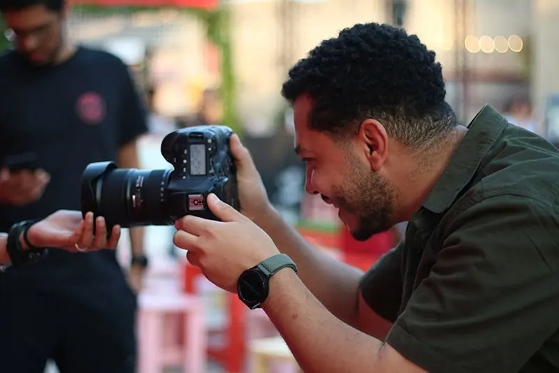

Licenciatura en Periodismo y Medios
Descripción del Programa
El programa de Periodismo y Medios equipa a los estudiantes con habilidades críticas de narración, investigación y producción multimedia. Aprende a navegar el panorama mediático en evolución con confianza, integridad y experiencia técnica en plataformas tradicionales y digitales.
Lo que aprenderás
- Redacción de noticias e investigación periodística
- Producción y edición de medios digitales
- Ética y legislación mediática
- Periodismo audiovisual y podcasting
- Estrategia y análisis de redes sociales
Oportunidades profesionales
Los graduados pueden desempeñarse como:
- Periodistas y reporteros
- Productores y editores de medios
- Gestores de redes sociales
- Presentadores de televisión o locutores de radio
- Creadores de contenido y consultores mediáticos
Prácticas profesionales y laboratorios mediáticos
Los estudiantes adquieren experiencia práctica mediante pasantías en organizaciones de noticias, medios universitarios y proyectos prácticos en laboratorios y estudios de producción digital.

Detalles del Programa
- Título: Licenciatura en Periodismo y Medios
- Duración: 4 años
- Modalidad: Presencial / Híbrido
- Créditos: 120
- Idioma: Inglés
- Fechas de inicio: Septiembre / Enero